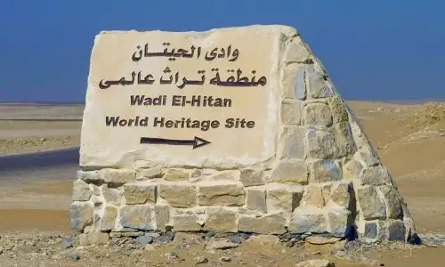
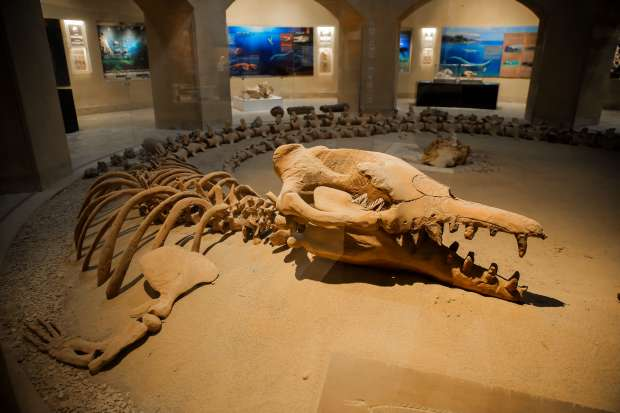
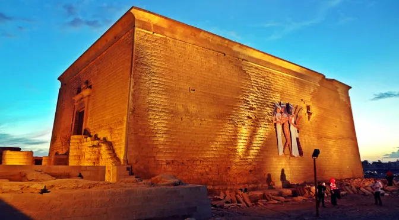
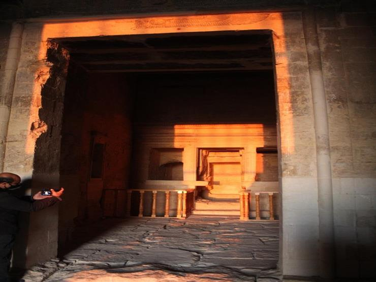

-
WADI EL-HITAN


Wadi El-Hitan (Valley of the Whales) is a natura l reserve area located in the western desert, about 200 km west of Cairo. The area is of important paleontological interest due to the existence of wide variety of fossilized flora and fauna.
-
TUNIS VILLAGE
The small village of Tunis (izbat Tunis) is located in the oasis of Fayoum , on the way to Wadi Rayan. Located on a hill facing a large salt water lake, the village overlooks a stunning view of the edge of the desert on the other side of the lake.
-
WADI EL-RAYAN
The Wadi El Rayan reserve consists of seven parts; the upper and lower Lakes , El Rayan springs, El Rayan Falls, El Modawara Mountain (or Jabal El Modawara in Arabic), El Rayan Mountain (Jabal El Rayan) .
-
QASR QARUN


Qasr Qarun, also known as the Qarun Palace, is one of Fayoum’s most important archaeological treasures and a remarkable example of ancient Egyptian architecture and devotion.